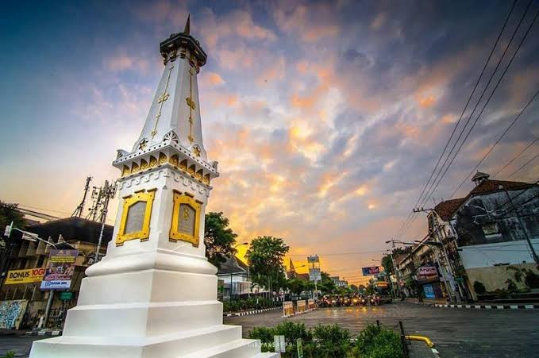
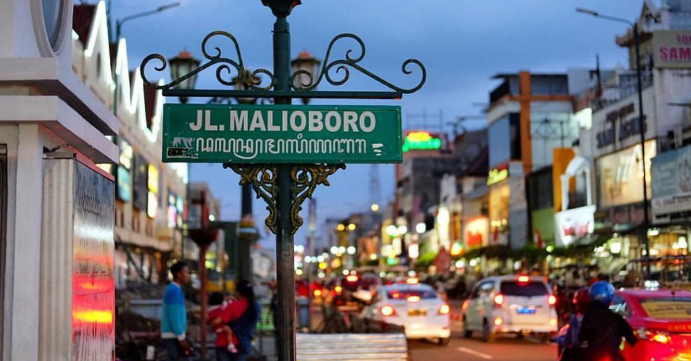
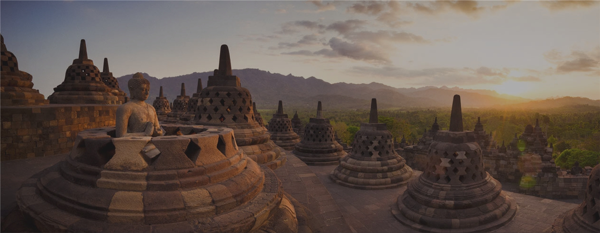

About
Grinaldy Yafi' Rasyad merupakan nama asli saya, tetapi saya punya nama brand sendiri yaitu grinaldyafi seperti pada logo di atas hehe, eitss..ada maknanya sendiri dari logo tersebut kawan. Pertama, ada bentuk segitiga kuning yang arahnya ke kanan yang berarti terus melangkah ke arah yang lebih baik dan terus moving forward. Kedua, "G" yang bentuknya mirip tombol "restart" itu artinya menggambarkan diriku yang terus mencoba pantang menyerah jika mengalami kegagalan, try again,try again and try again.. sampai berhasil hehe. Ketiga, warna kuing dalam psikologi lebih ke Optimis,Harapan, Pencerahan dan intelektualitas, kemudian warna Hitam lebiih memberi kepada Kekuatan dan Kesabaran.
Asalku Dari....
Yogyakarta adalah daerah istimewa setingkat provinsi di Pulau Jawa, Indonesia. Uniknya, nama ibu kota provinsinya juga Yogyakarta. Uniknya lagi, nama tersebut sering dilafalkan berbeda-beda. Ada yang menyebutnya Yogyakarta, Yogya, Jogjakarta, atau Jogja.
Bagi banyak orang Indonesia, Jogja adalah semacam kampung halaman kedua. Mungkin karena ratusan ribu orang pernah tinggal di sini bertahun-tahun ketika kuliah. Mungkin juga karena semua orang diterima seperti di rumah sendiri ketika di Yogyakarta.
Joko Pinurbo, penyair terkemuka Indonesia, mengatakannya dengan indah, "Yogya terbuat dari rindu, pulang, dan angkringan."
Yogya terbuat dari rindu, pulang, dan angkringan
Jogjakarta juga ramah backpacker. Konon tempat menginap paling murah di dunia itu ada di sini. Ada lho penginapan murah di Kota Jogja yang menyewakan kamar 50 ribu rupiah/malam sudah pakai AC dan TV. Tempat makan sekaligus tempat nongkrong yang merakyat juga mudah ditemukan di Yogyakarta, orang-orang menyebutnya angkringan.
Tempat Wisata Di Jogja
1. Malioboro
Malioboro adalah jantung Kota Jogja. Terkenal sebagai surga belanja cendera mata dan barang kerajinan, Malioboro menjadi salah satu magnet wisatawan untuk berkunjung ke Jogja.
2. Candi Prambanan
Candi Prambanan dibangun pada abad ke-9. Menjulang setinggi 47 meter dengan ornamen yang mengagumkan, kecantikan candi Hindu ini tidak tertandingi. Candi Prambanan terletak di sebelah timur Yogyakarta dan mudah dijangkau dengan bus Trans Jogja.
3. Candi Borobudur
Seribu tahun silam, wilayah ini merupakan pusat kerajaan Mataram Kuno yang makmur dan memiliki peradaban tinggi. Kerajaan inilah yang mendirikan Candi Borobudur yang merupakan candi Buddha terbesar di dunia, 300 tahun sebelum Angkor Wat di Kamboja. Candi Borobudur terletak di Magelang, sekitar 40 km dari pusat Kota Jogja, dan mudah dijangkau dengan kendaraan pribadi/rental dan Transportasi Umum.